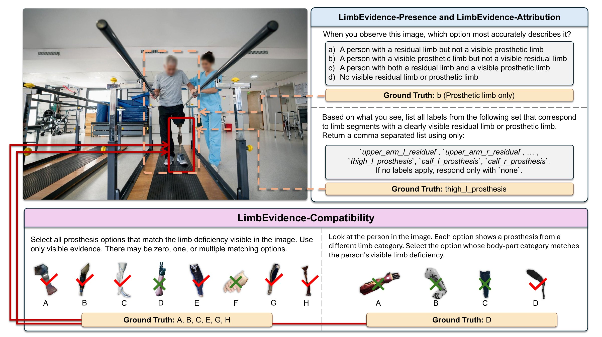
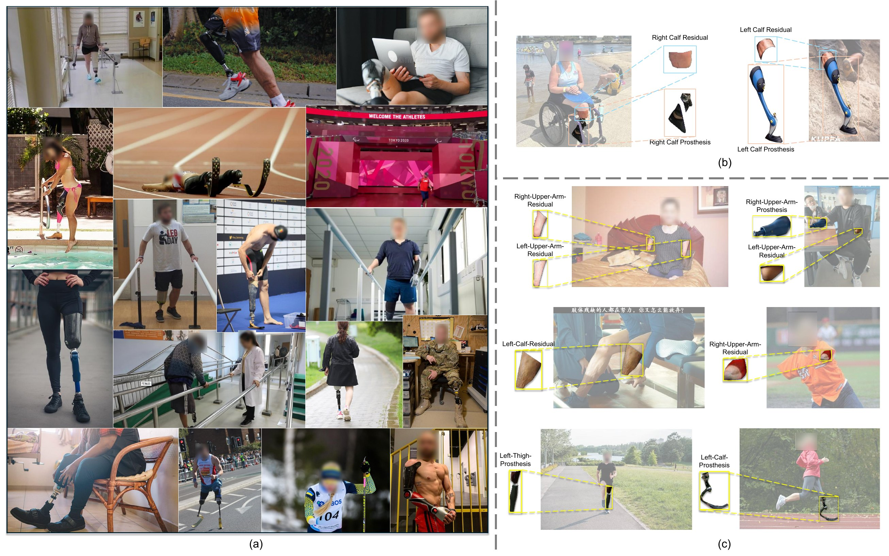

LimbEvidence-Presence
Which types of limb evidence are visible?
Choose one of four image-level labels: residual-limb evidence only, prosthetic-device evidence only, both, or neither.
Accuracy · macro-F1Evaluating Vision-Language Models on Images of Individuals with Limb Deficiencies
A test-only benchmark on about 17k open-world images. It separates detecting limb evidence, assigning it to the correct body region and side, and using it in compatibility-style structured decisions.
![Overview of InclusiveVLM-LimbEvidence in three panels. Panel 1, visible evidence: open-world images with annotated left and right calf prostheses. Panel 2, direct evidence tasks: Presence asks whether a residual or prosthetic limb is visible (answer: prosthetic only); Attribution asks which body regions show evidence, answered in Constrained form (calf_l_prosthesis, calf_r_prosthesis) or Free-form text. Panel 3, compatibility tasks: Compatibility-Category picks the option matching the visible limb deficiency, and Compatibility-Diversity requires selecting all compatible options (exact set recovery).](assets/figures/teaser_overview.jpg)
Strong performance on general benchmarks does not establish whether vision-language models (VLMs) correctly interpret images of individuals with limb deficiencies. For this population, applications such as preparing visual evidence for Paralympic athlete classification depend on correctly identifying residual limbs, prosthetic devices, and body-device configurations. We find that VLMs can miss this evidence or assign it to the wrong body regions, so later reasoning begins from incorrect visual information.
To examine these failures, we introduce InclusiveVLM-LimbEvidence, a test-only benchmark on about 17k open-world images of this population. It provides over 52k direct evidence queries and over 20k compatibility instances, with human reference results and prompt paraphrases. The design separates recognizing evidence from using it in structured decisions. LimbEvidence-Presence tests evidence detection. Because detection alone does not establish where evidence belongs, LimbEvidence-Attribution tests body-region assignment in parallel Constrained and FreeForm formats. To examine whether models can also use this evidence in structured decisions, LimbEvidence-Compatibility tests option matching under benchmark-defined relations through parallel Category and Diversity probes.
Across widely used general-purpose VLMs, models often detect limb evidence but fail to identify its body region or side. Partial option matches often fall short of complete compatible-set recovery. Models can also repeat the same incorrect answer across paraphrases. The larger model in our scale comparison improves coarse detection but does not resolve attribution and set-recovery errors. These results reveal a gap between recognizing limb evidence and using its spatial and relational details correctly. They also show that response consistency cannot replace correctness. InclusiveVLM-LimbEvidence makes these overlooked capability limits measurable and supports research toward visual AI that better serves individuals with limb deficiencies.
Each requirement asks for information that the previous one cannot supply. The tasks share an annotation framework but are scored independently. No model output is passed from one task to the next.
Which types of limb evidence are visible?
Choose one of four image-level labels: residual-limb evidence only, prosthetic-device evidence only, both, or neither.
Accuracy · macro-F1Where does the evidence belong on the body?
Assign each evidence type to a body region and side. There are 8 segments (left/right upper arm, forearm, thigh, calf) × 2 evidence types = 16 labels, plus none.
Which candidate devices match the visible configuration?
Match candidates under a fixed body-part correspondence. This is structured visual matching, not a prescription decision.

thigh_l_prosthesis. Below, the parallel probes of LimbEvidence-Compatibility use separate option grids. Diversity requires the complete set A, B, C, E, G, and H, while Category matches D. Checks mark target options and crosses mark distractors, not model predictions.We reuse images from the LDPose source pool. The residual-limb and prosthetic-device masks, body-region labels, and body-device records are new to this benchmark.
| Evaluation | Records / images |
|---|---|
| Presence1 of 4 image-level labels | 26,406 / 8,802 |
Attribution-Constrained16 segment-type labels + none | 26,406 / 8,802 |
| Attribution-FreeFormPaired output-format diagnostic | 500 paired items |
| Compatibility-CategoryOne accepted category | 8,048 / 8,048 |
| Compatibility-DiversityComplete matching set (may be empty) | 12,616 / 8,048 |
Counts are images and evaluation records, not distinct people. Candidate prosthesis options come from 7,497 source images that show prosthetic devices.

21 model variants from Qwen3-VL, Gemma-3, DeepSeek-VL2, Ministral-3, GPT-5, and Gemini-2.5. Five human raters provide a reference against the reviewed targets.
Detection is the strongest capability, but accuracy can hide category differences. GPT-5 macro-F1 is 50.0.
Assigning evidence to the right body region and side is the largest gap.
Scored as a hit on the accepted category set. Several categories can be acceptable.
DeepSeek-VL2-Tiny often hits some targets but rarely recovers the complete set. Human Exact is 12.0 and human F1 is 57.9.
| Family | Model | LimbEvidence-Presence | Attribution-Constrained | FreeForm | |||||
|---|---|---|---|---|---|---|---|---|---|
| Accuracy | Macro-F1 | Gated consistency | Set mIoU | Micro-F1 | Macro-F1 | Gated consistency | Set mIoU | ||
| Qwen3-VL | 4B-Inst | 41.9±0.6 | 30.1±0.5 | 60.7±0.7 | 17.0±0.3 | 25.4±0.4 | 18.4±0.4 | 45.8±3.0 | 37.7±2.2 |
| 8B-Inst | 41.4±0.6 | 32.0±0.4 | 61.7±0.7 | 18.8±0.4 | 28.2±0.4 | 21.5±0.5 | 51.3±2.5 | 35.2±2.1 | |
| 30B-A3B-Inst | 23.9±0.5 | 21.8±0.3 | 84.3±1.0 | 24.0±0.5 | 32.4±0.5 | 21.3±0.6 | 68.3±1.4 | 30.2±1.9 | |
| 235B-A22B-Inst | 74.2±0.8 | 43.8±0.3 | 91.6±0.8 | 24.8±0.7 | 34.2±0.3 | 23.6±0.4 | 68.5±4.5 | 45.7±1.7 | |
| 4B-Think | 40.6±0.6 | 30.1±0.5 | 66.7±0.7 | 17.8±0.3 | 27.2±0.4 | 19.3±0.5 | 55.5±3.7 | 43.1±1.9 | |
| 8B-Think | 35.3±0.6 | 28.8±0.4 | 66.0±0.7 | 16.2±0.3 | 25.3±0.4 | 20.4±0.5 | 47.6±2.5 | 44.7±2.1 | |
| 30B-A3B-Think | 33.6±0.6 | 29.2±0.4 | 70.3±0.8 | 19.4±0.4 | 24.1±0.3 | 18.7±0.3 | 52.5±2.2 | 38.8±2.2 | |
| Gemma-3 | 4B | 33.0±0.6 | 25.6±0.4 | 62.8±1.0 | 20.5±0.4 | 26.1±0.4 | 19.4±0.3 | 52.4±2.8 | 26.5±1.7 |
| 12B | 29.9±0.6 | 24.6±0.3 | 85.2±0.9 | 24.2±0.4 | 33.0±0.5 | 25.3±0.6 | 54.9±1.7 | 20.4±1.3 | |
| 27B | 38.6±0.6 | 30.2±0.4 | 68.1±0.8 | 27.8±0.4 | 37.2±0.5 | 24.4±0.7 | 69.4±1.7 | 24.4±1.6 | |
| DeepSeek-VL2 | Tiny | 19.4±3.5 | 9.8±1.4 | 66.3±7.1 | 6.5±0.1 | 11.1±0.2 | 9.1±0.2 | 65.4±0.7 | 18.7±1.8 |
| Small | 27.7±3.9 | 15.4±1.9 | 91.0±5.5 | 9.4±0.4 | 17.3±0.7 | 15.8±0.8 | 80.2±3.9 | 12.3±1.5 | |
| 27B-MoE | 34.0±7.7 | 12.7±2.1 | 100.0±0.0 | 3.4±1.3 | 19.2±4.2 | 16.1±4.7 | 50.0±11.1 | 27.4±1.3 | |
| Ministral-3 | 3B-Inst | 51.0±0.7 | 31.9±0.5 | 66.1±0.7 | 10.2±0.3 | 21.5±0.4 | 12.0±0.4 | 23.1±3.1 | 0.0±0.0 |
| 8B-Inst | 37.1±0.6 | 25.8±0.4 | 61.0±0.7 | 1.4±0.1 | 5.0±0.3 | 3.6±0.3 | 44.0±6.0 | 37.8±2.1 | |
| 14B-Inst | 29.3±0.6 | 22.2±0.3 | 78.3±0.9 | 10.8±0.3 | 21.5±0.5 | 10.5±0.5 | 33.3±1.9 | 37.6±2.1 | |
| 3B-Reason | 22.4±0.5 | 17.4±0.4 | 64.0±1.0 | 10.4±0.3 | 22.4±0.4 | 16.1±0.4 | 27.5±7.1 | 16.2±1.6 | |
| 8B-Reason | 24.8±0.6 | 20.3±0.4 | 58.4±0.9 | 2.9±0.2 | 9.5±0.4 | 6.8±0.4 | 46.1±6.0 | 36.2±2.0 | |
| 14B-Reason | 25.0±0.5 | 19.8±0.3 | 76.3±1.0 | 2.3±0.1 | 8.5±0.4 | 5.3±0.4 | 75.0±12.5 | 28.9±1.9 | |
| OpenAI | GPT-5 | 77.2±1.6 | 50.0±1.4 | 86.9±1.5 | 29.4±1.5 | 38.5±1.6 | 32.8±3.3 | 85.8±2.9 | 30.5±2.0 |
| Gemini | Gemini-2.5 | 47.0±0.7 | 35.3±0.4 | 73.1±0.8 | 24.8±0.4 | 35.9±0.5 | 29.0±0.7 | 55.3±1.8 | 22.8±1.2 |
| Human reference | 5 raters | 98.0±3.0 | 69.6±12.9 | – | 83.4±9.1 | 85.0±7.5 | 73.1±18.0 | – | – |
| Family | Model | Category | Diversity | |||||
|---|---|---|---|---|---|---|---|---|
| Accuracy | Exact | Partial | Precision | Recall | F1 | Gated consistency | ||
| Qwen3-VL | 4B-Inst | 37.2±1.1 | 2.0±0.3 | 66.0±0.9 | 51.9±0.8 | 29.1±0.6 | 31.9±0.5 | 14.3±4.9 |
| 8B-Inst | 36.6±1.1 | 1.9±0.3 | 64.1±0.9 | 52.3±0.8 | 26.0±0.6 | 30.0±0.5 | 17.2±5.4 | |
| 30B-A3B-Inst | 35.4±1.1 | 7.6±0.5 | 80.4±0.7 | 48.8±0.6 | 69.7±0.7 | 51.2±0.6 | 70.1±3.5 | |
| 235B-A22B-Inst | 39.7±1.1 | 3.1±0.4 | 57.1±0.8 | 49.8±0.7 | 21.4±0.8 | 25.9±0.5 | 30.8±3.4 | |
| 4B-Think | 25.4±0.5 | 7.5±0.6 | 78.3±0.9 | 48.1±0.9 | 67.2±0.9 | 49.3±0.7 | 65.8±4.2 | |
| 8B-Think | 24.5±0.5 | 7.7±0.5 | 75.4±0.7 | 47.1±0.6 | 61.8±0.8 | 47.0±0.6 | 57.9±3.8 | |
| 30B-A3B-Think | 22.6±0.4 | 2.7±0.4 | 62.9±1.0 | 50.4±0.9 | 29.0±0.8 | 29.7±0.7 | 19.5±5.3 | |
| Gemma-3 | 4B | 16.3±0.9 | 0.7±0.1 | 57.2±0.8 | 47.7±0.8 | 16.9±0.3 | 22.9±0.4 | 25.7±9.3 |
| 12B | 11.6±0.8 | 1.0±0.2 | 57.4±0.9 | 48.2±0.8 | 17.7±0.4 | 23.4±0.4 | 19.9±7.1 | |
| 27B | 10.5±0.7 | 0.9±0.2 | 56.0±0.9 | 49.0±0.9 | 15.8±0.4 | 21.9±0.5 | 36.5±11.2 | |
| DeepSeek-VL2 | Tiny | 3.0±1.1 | 10.2±1.9 | 84.5±2.2 | 49.6±2.1 | 81.3±2.3 | 57.5±2.1 | 87.0±7.2 |
| Small | 30.6±3.0 | 5.8±1.5 | 70.3±2.8 | 58.3±2.7 | 40.5±2.1 | 43.8±2.1 | 50.6±13.7 | |
| 27B-MoE | 37.3±5.5 | 8.7±3.2 | 69.3±5.2 | 55.6±4.9 | 44.8±4.6 | 42.6±4.0 | 48.8±18.0 | |
| Ministral-3 | 3B-Inst | 10.0±0.3 | 2.8±0.4 | 50.4±1.1 | 44.6±1.0 | 16.1±0.5 | 21.3±0.6 | 18.5±5.0 |
| 8B-Inst | 18.0±0.9 | 1.0±0.2 | 54.7±0.9 | 49.3±0.8 | 15.6±0.4 | 21.6±0.4 | 13.3±7.6 | |
| 14B-Inst | 17.5±0.9 | 1.1±0.2 | 55.5±0.9 | 49.4±0.8 | 15.9±0.4 | 21.9±0.4 | 14.4±7.0 | |
| 3B-Reason | 17.6±0.9 | 0.6±0.2 | 64.1±0.9 | 47.8±0.8 | 22.8±0.5 | 28.2±0.5 | 64.6±12.5 | |
| 8B-Reason | 17.9±0.9 | 0.4±0.2 | 64.9±0.9 | 48.2±0.8 | 24.5±0.5 | 29.5±0.4 | 42.3±15.7 | |
| 14B-Reason | 15.6±0.9 | 1.1±0.2 | 70.4±0.8 | 48.8±0.7 | 34.8±0.6 | 35.8±0.5 | 13.4±6.6 | |
| OpenAI | GPT-5 | 32.5±0.8 | 2.9±0.3 | 57.6±0.9 | 53.3±0.9 | 18.9±0.5 | 24.8±0.6 | 17.7±4.7 |
| Gemini | Gemini-2.5 | 34.7±0.5 | 3.5±0.3 | 63.5±0.9 | 48.2±0.8 | 27.0±0.6 | 30.4±0.5 | 31.9±4.8 |
| Human reference | 5 raters | 56.0±13.0 | 12.0±9.0 | 68.0±13.0 | – | – | 57.9±3.4 | – |
Highlighted columns are the primary scores. Values are copied from the submitted manuscript (Tables 1 and 2). Scroll horizontally on small screens.
![Three failure examples with predictions from six model families. Top left: a Presence item whose ground truth is b (prosthetic limb only); GPT-5, Gemini-2.5, Qwen3-VL, and Gemma-3 answer c, while DeepSeek-VL2 and Ministral-3 answer b. Bottom left: a Presence item whose ground truth is a (residual limb only); GPT-5, Gemini-2.5, Qwen3-VL, and Ministral-3 answer d, while DeepSeek-VL2 and Gemma-3 answer a. Right: a Category item whose ground truth is d (lower leg); models answer b, a, a, b, a, and c, so every displayed prediction is incorrect.](assets/figures/failure_case.jpg)
Diagnostics below use Qwen3-VL-235B-A22B-Instruct, the largest open-weight model evaluated, unless noted otherwise.
In Attribution responses, the evidence type is correct on 74.40% of prompts, but body region and side are correct on only about 40%. The complete target is correct on 17.10%.
Separately correcting body region or side with the target raises set mIoU by 16.32 or 21.41 points. These are target-assisted gains, not a trained remedy.
Low Exact is not confined to one model family. Precision and recall show different failures. DeepSeek-VL2-Tiny covers most targets but adds distractors (81.3 recall, 49.6 precision). GPT-5 misses most targets (18.9 recall, 53.3 precision).
The 235B model selects 1.63 options on average against a target average of 3.83. Yet it selects an option on 90.44% of instances where no option matches.
| Model | Partial | Exact | Prec. | Recall |
|---|---|---|---|---|
| Qwen3-VL-30B-A3B-Inst | 80.4 | 7.6 | 48.8 | 69.7 |
| DeepSeek-VL2-Tiny | 84.5 | 10.2 | 49.6 | 81.3 |
| Gemini-2.5 | 63.5 | 3.5 | 48.2 | 27.0 |
| GPT-5 | 57.6 | 2.9 | 53.3 | 18.9 |
| Gemma-3-27B | 56.0 | 0.9 | 49.0 | 15.8 |
On Constrained Attribution, the 235B model has 75.43% raw paraphrase consistency but only 17.10% exact correctness. It gives the same incorrect answer throughout 47.28% of paraphrase groups.
Its correctness-gated consistency is 68.51%, but the gate keeps only 2,099 of 8,802 groups (23.85%). Consistency must be read together with correctness and coverage.
Moving from Qwen3-VL-30B-A3B to 235B-A22B raises Presence accuracy by more than 50 points. Attribution barely changes, and Diversity F1 falls.
These are comparisons of the evaluated checkpoints, not a scaling law. Thinking or Reasoning checkpoints and the medical-domain MedGemma control also fail to improve all primary scores (see Q15 and Q16).
| Qwen3-VL Instruct | 30B | 235B | Δ |
|---|---|---|---|
| Presence accuracy | 23.9 | 74.23 | +50.33 |
| Attribution set mIoU | 24.0 | 24.76 | +0.76 |
| Category accuracy | 35.4 | 39.70 | +4.30 |
| Diversity Exact | 7.6 | 3.07 | −4.53 |
| Diversity F1 | 51.2 | 25.90 | −25.30 |
This Q&A explains the design, results, and intended use of the benchmark. Each answer points to the relevant sections, tables, and appendices of the manuscript.
InclusiveVLM-LimbEvidence makes specific visual errors measurable for individuals with limb deficiencies. It combines new evidence annotations with separate evaluations of detection, body-region attribution, and compatibility-style structured decisions. The main tables cover 21 model variants from six general-purpose vision-language model (VLM) families. The highest model Constrained Attribution score is 29.4% set mIoU, a label-overlap measure, compared with a human reference of 83.4%. Low complete-set recovery also appears across families. Paired output formats, inference-style comparisons, a medical-domain control, and component diagnostics help explain these results. This connects population coverage to concrete questions in visual grounding, spatial assignment, and set prediction, giving researchers defined targets for improving visual AI for individuals with limb deficiencies.
PaperSections 1 and 4, Tables 1, 2, 4, 5, and 6, Appendix D.1.
We reuse LDPose images and add benchmark-specific masks for residual limbs and prosthetic devices, body-region labels, body-device records, prompts, and evaluation targets. LDPose primarily evaluates pose estimation, while ProGait supports video-based perception and gait analysis. Counterfactual depiction studies examine how model responses change between depictions. InclusiveVLM-LimbEvidence instead checks whether a language-based answer agrees with the visible limb evidence and target for the evaluated image. These resources address complementary questions about body representation, response variation, and image-specific correctness.
PaperSection 2.1, Section 3.3, Appendices A.1 and A.2.
Each requirement asks for information that the preceding description alone cannot supply. LimbEvidence-Presence asks which evidence types are visible. Detecting a prosthetic device does not identify the body region or side to which it belongs, which motivates LimbEvidence-Attribution. Identifying that region still does not establish whether a model can match the visible configuration to candidate devices, which motivates LimbEvidence-Compatibility. Constrained and FreeForm are parallel Attribution formats. Category and Diversity are parallel Compatibility probes. The tasks are evaluated separately, so the progression describes additional requirements rather than a pipeline that passes one model answer into the next task.
PaperSection 3.1, Figure 1, Appendix B.1.
The authors defined the probes from observed errors in VLM prototypes for preparing visual evidence in Paralympic athlete classification workflows. The evaluation targets were fixed before the new annotations were created. An International Paralympic Committee certified classifier supported annotation guidance and case adjudication. This contribution concerns the interpretation of visual evidence within the annotation process. Probe selection remained an author responsibility. The project did not conduct formal participatory co-design, and the manuscript distinguishes these roles rather than describing the benchmark as a complete clinical capability taxonomy.
PaperSection 3.1, Section 3.3, Appendices B.1 and B.4.
Limb evidence means visible residual-limb or prosthetic-device regions and their annotated relation to the body. Attribution assigns each evidence type to a body region and side, such as left-thigh prosthetic-device evidence. The vocabulary covers upper arm, forearm, thigh, and calf on each side, crossed with the two evidence types. Left and right refer to the depicted individual. Residual-limb and prosthetic-device masks can occupy different pixels within the same segment. Models predict labels rather than mask coordinates. Unseen anatomy and intact-limb labels are outside the annotation target.
PaperSection 3.3, Appendices B.3 and B.5.
The benchmark contains 16,850 source images. Presence and Constrained Attribution each contain 26,406 prompts over 8,802 images, giving 52,812 direct evidence queries. Category contains 8,048 instances and Diversity contains 12,616 instances over 8,048 images, giving 20,664 Compatibility instances. FreeForm is a separate diagnostic on 500 paired image-target items. These are counts of images and evaluation records, not distinct people. Filtering removes near-duplicates, but image counts do not establish person-disjoint evaluation or demographic representativeness. The results describe the evaluated open-world image collection.
PaperSection 3.2, Table 3, Appendices B.2 and D.3.
Compatibility follows a fixed correspondence between the body-part categories annotated for the image and those represented by the candidate devices. For example, an upper-limb device is excluded when the image has only lower-limb target categories. Different device appearances can satisfy the same body-part relation. The visual task is to identify the relevant categories in the image and candidates, then apply that relation. Accepted categories and option sets are recorded and reviewed during annotation. This is structured visual matching, not a decision about which device should be prescribed to an individual.
PaperSection 3.4, Appendices B.6 and D.4.
Category asks for one category. A prediction is correct when it belongs to the accepted category set, even when several categories are acceptable. Diversity asks for the complete matching option set, which can be empty. Its primary F1 describes set overlap, while Exact requires every target and no distractors. Partial records at least one target hit. These probes use separate grids and evaluate different output requirements. Diversity refers to variation in candidate appearance, not demographic diversity or a later step that receives the Category prediction.
PaperSection 3.4, Figure 2, Appendix B.6.
Annotators use visual guidelines for residual-limb evidence, prosthetic-device appearance, and body regions. A second annotator reviews each mask and derived label set, including accepted categories and matching option sets. Disagreements above the annotation tolerance lead to re-annotation and adjudication. A certified classifier supports guidance and case adjudication, and periodic spot audits inspect randomly sampled batches. The reviewed masks, labels, and option sets form the reference targets used for model evaluation and human scoring. This makes the connection between the image annotation and the scored answer explicit.
PaperSection 3.3, Figure 3, Appendix B.4.
The human results describe performance under different response requirements. Raters reach 98.0% Presence accuracy and 83.4% Constrained Attribution mean set intersection over union (set mIoU). For Diversity, the overall F1 is 57.9%, while Exact is 12.0%. Exact gives no partial credit when a required option is omitted or a distractor is added. It therefore measures a different requirement from recovering much of the target set. The human reference provides task-specific comparisons against reviewed targets. The background-specific results below add context that the overall average alone does not show.
PaperTables 1, 2, and 4(a), Appendix C.3.
The two participants with extensive disability-research experience achieve Diversity F1 scores of 77.78% and 70.67%. Their mean is 74.22%, compared with 47.03% for the participants with primarily computer-science backgrounds. The ratio is 1.58, with a 95% interval of [1.16, 2.22]. An analogy is bird identification, where people with different experience can perform differently under the same answer rules. A mean below the maximum does not by itself identify a problem with those rules. The ratio compares performance, not inter-rater agreement. The comparison is descriptive because assignments were not identical across participants. It is not a causal estimate of experience or a clinical performance ceiling.
PaperTable 4(a), Appendix C.3.
Different metrics expose different errors. GPT-5 reaches 77.2% Presence accuracy but 50.0% macro-F1, while Gemini-2.5 reaches 47.0% and 35.3%, respectively. Accuracy weights examples equally, whereas macro-F1 weights the evaluated labels equally. For set outputs, Exact requires complete agreement, while set mIoU and F1 describe overlap. Sample-average and micro-F1 also use different aggregation rules. The tables report 95% confidence intervals where available, with the resampling units specified per evaluation in Appendix C.2. These distinctions help readers assess category imbalance, missed targets, and incorrect inclusions without treating one metric as a complete account of performance.
PaperTables 1 and 2, Appendix C.2.
The evidence comes from several complementary comparisons, not one model. The main tables compare six VLM families. The paired Attribution study holds images and targets fixed while changing the output format. Six within-family inference-style pairs and the matched MedGemma comparison examine checkpoint style and specialization. Figure 4 shows both correct and incorrect Presence answers across families, plus a Category example where every displayed prediction is incorrect. The component analysis provides a focused view of spatial assignment. These analyses support task-level conclusions about observable model outputs without attributing every error to one mechanism. They make the findings relevant to model evaluation while keeping the role of vocabulary, format, and familiarity explicit.
PaperTables 1, 2, 4(b), 5, and 6(c), Figure 4, Appendices C.4 through C.7 and D.2.
Not uniformly. Moving from Qwen3-VL-30B-A3B-Instruct to 235B-A22B-Instruct raises Presence accuracy from 23.9% to 74.23%, but Constrained Attribution set mIoU changes only from 24.0% to 24.76%. Diversity F1 falls from 51.2% to 25.90%. A task-dependent pattern also appears within Gemma-3. Its reported Constrained Attribution set mIoU rises from 20.5% at 4B to 27.8% at 27B, while Category accuracy falls from 16.3% to 10.5%. Larger checkpoints can improve some requirements without improving others. These are comparisons of the evaluated checkpoints and settings, not a controlled estimate of parameter count alone or a general scaling law.
PaperSection 4.1, Tables 1, 2, and 5(a), Appendix C.4.
They test whether the findings depend on the evaluated inference style. Across six same-family, same-scale pairs, no Thinking or Reasoning checkpoint improves all four primary probe scores. Qwen3-VL-4B-Thinking improves Diversity F1 by 17.4 percentage points while reducing Category accuracy by 11.8 points. For Ministral-3, Reasoning increases Diversity F1 by 6.9, 7.9, and 13.9 points at 3B, 8B, and 14B, respectively, but Exact decreases or remains unchanged at the reported precision. Including these results makes the trade-offs visible instead of assuming that reasoning either always helps or never helps. The comparisons concern existing checkpoints, not an isolated intervention on reasoning.
PaperTable 5(b), Appendix C.4.
The matched MedGemma 1.5 4B comparison does not show improvements on the three reported Presence, Attribution, and Diversity primary scores. Relative to Gemma-3 4B, the differences are -7.87 points in Presence accuracy, -12.31 in Attribution set mIoU, and -4.56 in Diversity F1. The Category difference has magnitude 1.12 points, with a paired interval that includes zero. Medical-domain specialization is therefore not sufficient for better performance in this comparison. The conclusion concerns the evaluated model and open-world limb evidence, not all medical VLMs or clinical capabilities.
PaperTable 5(c), Appendix C.4.
FreeForm is an output-format diagnostic for an attribution target already evaluated at full scale in Constrained form. We randomly sampled 500 image-target pairs and held both the image and target fixed within each paired comparison. On this subset, Qwen3-VL-4B-Thinking changes from 17.22% Constrained set mIoU to 43.1% FreeForm set mIoU. The corresponding 8B values are 15.87% and 44.7%, while GPT-5 changes from 26.51% to 30.5%. Output format clearly affects measured performance. The comparison is not an assessment of unrestricted description quality, and its Constrained scores should not be replaced with the full-pool scores.
PaperSection 4.1, Table 4(b), Appendices B.5 and C.5.
Parsing coverage measures whether a deterministic parser can recover a canonical label set, not whether that set is correct. In the paired diagnostic, coverage is 93.4% for Qwen3-VL-4B-Thinking, 90.4% for 8B-Thinking, and 83.4% for GPT-5. The remaining outputs are invalid under the parser. Attribution is then evaluated against the benchmark targets. Reporting coverage alongside set mIoU helps distinguish recoverable output structure from correct evidence assignment. The observed format differences include the effects of generation and deterministic normalization, rather than showing that the output interface is irrelevant.
PaperTable 4(b), Appendix C.5.
Low Exact is not confined to one model family. Qwen3-VL-30B-A3B-Instruct reaches 80.4% Partial but 7.6% Exact. Gemma-3-27B reaches 56.0% and 0.9%, and Gemini-2.5 reaches 63.5% and 3.5%, respectively. Precision and recall reveal different error profiles. DeepSeek-VL2-Tiny combines 81.3% recall with 49.6% precision, while GPT-5 has 18.9% recall and 53.3% precision. High target coverage with incorrect inclusions and low target coverage are different failures, even when both produce low Exact. Table 7 further separates missed targets, extra options, and no-match errors in its detailed case analysis. This makes set prediction more informative than a single count of imperfect answers.
PaperSection 4.2, Tables 2 and 7, Appendix C.7.
Appendix C.9 uses target counts to show what a response can achieve without inspecting the image. In the Presence pool analyzed there, always choosing the most frequent label yields 65.79% accuracy. In the corresponding 12,616-item Diversity pool, always returning an empty set yields 14.67% Exact, while selecting every option yields 85.33% Partial. These references show why a high Partial score or a nonzero Exact score alone need not demonstrate image-grounded matching. We therefore report overlap, selection size, and empty-target outcomes alongside Exact and Partial. The references are analytical calculations, not additional model runs, and comparisons require the same evaluation pool.
PaperAppendix C.9, Tables 6(b) and 7.
Correctness checks agreement with the target, while consistency checks variation across equivalent wording. The main tables show why they are not interchangeable. Gemma-3-12B has 85.2% gated Presence consistency but 29.9% accuracy. DeepSeek-VL2-Tiny has 87.0% gated Diversity consistency but 10.2% Exact. Gated consistency applies only to groups with at least one correct response, so these values do not describe overall correctness. The separate raw-consistency analysis supplies direct evidence of repeated errors: Qwen3-VL-235B gives the same incorrect Attribution answer throughout 47.28% of paraphrase groups. We therefore interpret correctness, raw consistency, gated consistency, and retained coverage separately. A stable answer can be wrong, and high consistency on a retained subset is not a measure of success across all examples.
PaperTables 1, 2, and 6(e), Section 4.3, Appendix C.8.
A no-match target means none of the presented candidates satisfies the benchmark relation. An insufficient-information choice, where provided, is an explicit answer indicating inadequate visible evidence. An invalid output is one from which the parser cannot recover a valid canonical response. These outcomes have different meanings. Correctly returning an empty set does not by itself establish uncertainty-based abstention, and a parsing failure is not a successful decision to withhold an answer. Keeping the cases separate makes the selection errors and the scope of the reported behavior easier to interpret.
PaperAppendix B.6, Appendix C.7.
The experiments identify several concrete development targets. Low Attribution scores across model families motivate better evidence-to-region assignment. Diversity precision and recall distinguish missed targets from incorrect inclusions, while the paired FreeForm results show why improvements should be checked across output formats. The 235B oracle analysis adds a focused diagnostic: correcting body region or side separately raises set mIoU by 16.32 or 21.41 percentage points. These are target-assisted gains, not results from a trained remedy. The exact pretraining corpora are unavailable, so the study does not estimate population-specific training prevalence. Future methods should use separate development data and test whether they address these observed errors on the fixed benchmark, rather than improve only coarse accuracy or response consistency.
PaperTables 1, 2, 4(b), and 6(c), Appendices B.7, C.6, D.2, and D.4.
The release plan pairs benchmark annotations and task records with stable image identifiers, checksums, exact option grids, scoring code, and reconstruction instructions. Source-image access follows the permitted LDPose access route rather than relying only on changing web links. Recorded model identifiers and API snapshot dates will accompany closed-model results. Candidate-pool updates will use new versions and change logs, preserving the relationship between prior scores and their original targets. These plans distinguish reproducing target-based scoring from rerunning a provider service that may change. We will document the non-owner download and scoring check alongside the release.
PaperAppendix C.1, Appendices E.2 and E.3.
The project received approval from an institutional Human Research Ethics Committee. Institution names and approval identifiers are omitted during anonymous review. Benchmark annotations, prompts, and derived metadata are designated for CC BY-NC-SA 4.0 release, while source photographs retain their own rights and access conditions. The access agreement restricts use to non-commercial research, requires secure storage, and prohibits re-identification and face recognition. Correction and removal procedures support affected individuals and rights holders. The resource evaluates model interpretation of visible evidence, not the abilities, identities, or lived experiences of the people depicted.
PaperEthics statement, Appendices E.1 and E.2, Datasheet.
At some point, we noticed we were answering imaginary reviewers in the middle of the Introduction. That was not our best writing habit. So the paper now follows the research story, and this page takes the follow-up questions. You can open the ones you care about and skip the rest. And yes, we hope these answers help earn your support for the paper. We care about making individuals with limb deficiencies part of VLM evaluation, and we hope the benchmark and evidence make a convincing case. Thanks for reading this far.
No question matches this filter.
The repository contains reviewer-facing code only. Benchmark data are supplied separately through the review artifact channel.
Code paths keep the internal prefix inclusive_vlm_lep, which refers to the same benchmark.
The benchmark evaluates how models interpret visible evidence. It does not assess the abilities, identities, or lived experiences of the people depicted.
Test-only evaluation of VLMs on images of individuals with limb deficiencies: evidence detection, body-region attribution, and compatibility-style structured matching.
Clinical decisions, prosthesis prescription or recommendation, capability judgments about individuals, surveillance, and re-identification.
Approved by an institutional Human Research Ethics Committee (details withheld for anonymous review). Annotations, prompts, and derived metadata are released under CC BY-NC-SA 4.0. Source images follow the LDPose access terms and a non-commercial Data Use Agreement that prohibits re-identification and face recognition. Correction and removal requests are supported.
Anonymous placeholder during review.
@inproceedings{anonymous2027inclusivevlm,
title = {InclusiveVLM-LimbEvidence: Evaluating Vision-Language Models on Images of Individuals with Limb Deficiencies},
author = {Anonymous},
booktitle = {Submitted to the International Conference on Learning Representations (ICLR)},
year = {2027}
}